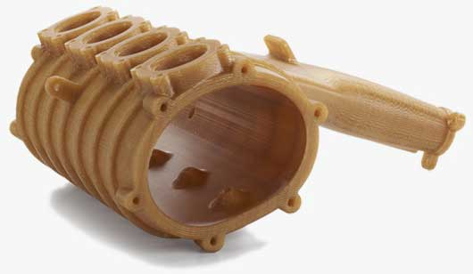
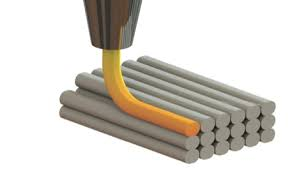
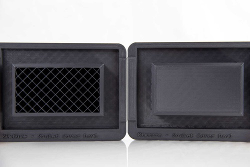
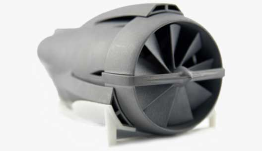
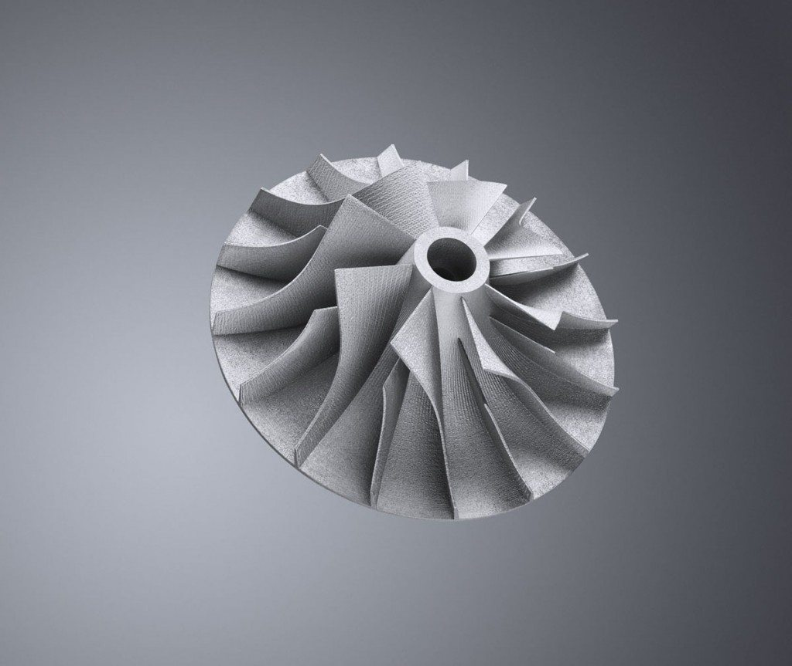
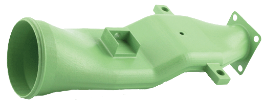
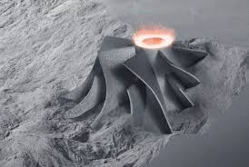
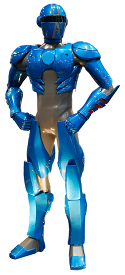
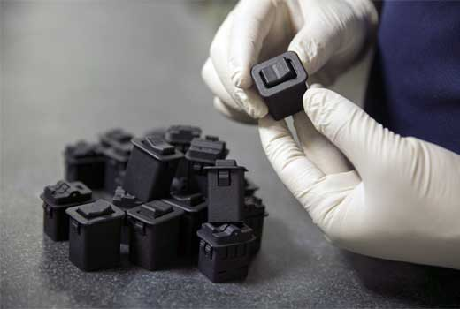
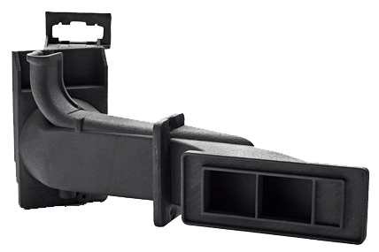

Portfolio
Autem ipsum nam porro corporis rerum. Quis eos dolorem eos itaque inventore commodi labore quia quia. Exercitationem repudiandae officiis neque suscipit non officia eaque itaque enim. Voluptatem officia accusantium nesciunt est omnis tempora consectetur dignissimos. Sequi nulla at esse enim cum deserunt eius.
Fused Deposition Modeling
What Is Fused Deposition Modeling?
FDM (Fused Deposition Modeling) offers 3D printing’s unparalleled design freedom and fast lead times coupled with strong thermoplastics.
FDM Part Strength
FDM utilizes strong, engineering-grade materials like ABS, Polycarbonate and ULTEM™ 9085 Resin.
FDM can create production parts and functional prototypes with outstanding thermal and chemical resistance and excellent strength-to-weight ratios.
FDM from the Pioneers of 3D Printing
Being a part of the family that invented FDM technology means we’re backed by Stratasys’ strong commitment to R&D.
Our in-house FDM experts are constantly exploring new applications and possibilities alongside the Stratasys team.
FDM's Big Impact with Small Production Runs
FDM helps companies say yes to more opportunities in low-volume, customized production parts.
How Does FDM Work?
FDM technology allows you to use engineering-grade thermoplastics that are ready for harsh environments, tough testing, and demanding applications.
Use the same strong, stable plastics you’re familiar with to build geometries only attainable with 3D printing.
Engineer-Grade Thermoplastics with FDM
A wide-range of industry specific thermoplastics will help you achieve specific characteristics.
Projects in the industrial, heavy machinery and transportation industries utilize PC-ABS for its superior strength, and aerospace engineers favor ULTEM™ 9085 Resin and ULTEM™ 1010 Resin for their FST ratings and FAA 25.853 compliance.
Some materials feature biocompatibility and MRI transparency for medical applications.
Sparse vs. Solid Fill
One unique function of FDM 3D printers is a build mode that allows users to fill in thicker sections of the part geometry with what’s called “sparse fill.”
Sparse fill is when plastic is extruded in a scaffolding construction instead of a standard 3D printed layer. Solid fill is when the interior sections of the geometry have no air-gap between raster (the interior fill).
This results in sections of a 3D part being nearly hollow, but with the support needed to retain strength and rigidity. The exterior of either solid or sparse looks the same, while the sparse version greatly reduces the weight when compared to its solid counterpart.
Sparse-filled parts can be finished with the same post processes as solid-filled parts with the same processes as solid-filled parts (such as epoxy, primer, and paint).
Reduced Weight
Sparse fill means less material built into the part, so the weight of the final part is significantly reduced.
Reduced Build Time
Because the 3D printer has less plastic to lay down in each layer, a part that utilizes sparse fill takes less time to build, reducing delivery time.
Reduced Part Cost
Additionally, the reduction in material used to build spare fill parts and faster print time contributes to a cheaper overall part.
Materials for 3D Printing Parts with FDM
Discover real engineering-grade thermoplastics formulated for additive technology. Subject materials to harsh environments, tough testing and demanding applications.
|
Material |
Description | Benefits | Applications |
|---|---|---|---|
| General use "go-to" material. Variety of color options. Good for parts 1" inch cubed to parts larger than 5' feet. |
|
|
|
| Strong ABS thermoplastic compounded with carbon resulting in static dissipative properties |
Static
dissipative properties for applications where a static charge can:
|
|
|
| Superior strength ABS; Translucent |
|
|
|
| Bio-compatible (ISO 10993; USP Class VI) NSF 51 Food-contact certification |
|
|
|
| General use "go-to" material UV-stable with a variety of color-fast color options |
|
|
|
| Accurate, rigid, stable |
|
|
|
| Superior strength & heat resistance of PC with flexibility of ABS |
|
|
|
| Accurate, rigid, stable; Bio-compatible (ISO 10993; USP Class VI) |
|
|
|
| PPSF (PPSU) combines strong mechanical performance with high temperature and chemical resistance |
|
|
|
| Rigid, highest heat resistance; FST certified; Bio-compatible; Food contact certified |
|
|
|
| High strength, high heat resistance; FST certified per "14 CFR/FAR 25.853" & "ASTM F814/E662" |
|
|
|
| FDM Pro - Low coefficient of variance and increased mechanical properties vs. the standard ULTEM™ 9085 Resin. FST certified per "14 CFR/FAR 25.853" & "ASTM F814/E662" |
|
|
|
| High elongation at break, fatigue resistance; Resistance to moderate solvents, alcohols, chemicals |
|
|
|
| Chipped Carbon Fiber filled Nylon 12 combined with Electrostatic Discharge (ESD) Properties |
|
|
|
| Antero™ 800NA PEKK-based thermoplastic combines FDM's design freedom and ease of use with the excellent mechanical properties and low outgassing characteristics of PEKK material |
|
|
|
| Antero™ 840CN03 is a PEKK-based FDM thermoplastic combining the excellent physical and mechanical qualities of PEKK with electrostatic dissipative (ESD) properties. The material is filled 3% by weight with carbon nanotubes. |
|
ESD values range from 104 – 109 ohms per square inch. This makes the material particularly suitable for space and industrial applications where these qualities are critical. | |
| FDM® TPU 92A is a thermoplastic polyurethane with a Shore A value of 92. FDM TPU 92A brings the benefits of elastomers to FDM 3D printing and offers the capability to quickly produce large and complex elastomer parts. |
|
|
Direct Metal Laser Sintering
What Is Direct Metal Laser Sintering?
Direct Metal Laser Sintering (DMLS) is a direct metal laser melting (DMLM) or laser powder bed fusion (LPBF) technology that accurately forms complex geometries not possible with other metal manufacturing methods.
DMLS Part Strength
DMLS parts are stronger and denser than investment casted metal parts, and they can help you get to market first with faster turnaround times.
Metal 3D printing is an ideal process for complex oil and gas components, custom medical guides, part-consolidated aerospace parts and tough functional prototypes.
Streamlined Metal Parts with DMLS
Utilize the design freedom of DMLS and produce accurate metal components in less time than other manufacturing methods.
How Does Direct Metal Laser Sintering Work?
DMLS uses a precise, high-wattage laser to micro-weld powdered metals and alloys to form fully functional metal components from your CAD model.
DMLS parts are made with powdered materials like aluminum, stainless steel and titanium, as well as niche alloys like MONEL® K500 and Nickel Alloy 718.
Finishing DMLS Parts
Raw DMLS parts have a surface finish comparable to a fine investment casting part, and expert finishing services are sometimes needed.
Stratasys Direct offers a full suite of professional finishing operations, including precision machining, media blasting, surface grinders and milling.
Direct Metal Laser Sintering Quality Controls
To maintain critical quality control standards, we use a range of tools to inspect and ensure customer specifications. With international certification standards ISO 9001 and AS9100, we have stringent systems in place to guarantee quality and consistently are met.
We utilize tools like coordinate measuring machines, probes, cutup metallography processes and flow benches, hydrostatic pressure testing machines to guarantee quality is consistently met. DMLS materials build fully dense, corrosive resistant and highly robust metal parts that can be further treated through heat, coating and sterilization.
DMLM Products
Essentials
- The fastest way to manufacture with DMLM technology
- Produce geometries with high-strength metal alloys in one fluid build
- Hand-finishing with media blast
- Manufacture in Stainless Steel 316L or 17-4, Aluminum (AlSi10Mg), Cobalt Chrome, Nickel Alloy 625, and Titanium (Ti64)
A.M.P. Specification
- No spec? No problem! Our Additive Metal Process Spec provides production metal parts with DMLM technology
Customer Specification
- Adhering to customer-provided statement of work and process, material, and/or machine specifications. The ultimate level of control for your project and product
DMLM Discover
We’re ready to take on any challenge and push the boundaries of what’s possible with DMLM Discover – our custom solution for new and novel additive alloys and designs.
- Access materials in the early stages of development for DMLM
- Test custom manufacturing parameters for your project
Materials for 3D Printing Parts with DMLS
Metal materials like you’ve never seen them before. Produce complex geometries in one fluid build that would be impossible to compose with traditional manufacturing processes. Additive metals deliver dense, corrosive resistant and high strength parts which can be further treated through heat, coating and sterilization.
|
Material |
Description | Benefits | Applications |
|---|---|---|---|
| Martensitic, chromium-nickel-copper precipitation-hardening stainless steel |
|
|
|
|
Stainless Steel 316L (As Built) |
Austenitic stainless steel |
|
|
| Casting grade alloy |
|
|
|
| Nickel based superalloy |
|
|
|
| High strength nickel base superalloy |
|
|
|
| Age-hardenable Nickel-Copper alloy |
|
|
|
| Alpha-beta titanium alloy |
|
|
|
|
Cobalt Chrome CoCrMo (As Built) |
Metal alloy of cobalt and chromium |
|
|
Selective Laser Sintering
What Is Selective Laser Sintering?
Selective Laser Sintering (SLS) is a way to build prototypes early in the design cycle or production parts in a wide variety of applications.
Selective Laser Sintering (SLS), also just known as Laser Sintering (LS), creates tough and geometrically complex components for batch or serial manufacturing in a wide variety of applications.
SLS production parts are strong, water and air-tight, heat resistant and repeatable.
Prototypes to Production Parts with SLS
This robust process can build parts for all stages of the production lifecycle, from prototyping to low-volume manufacturing opportunities.
SLS builds robust parts with filled Nylon materials, making it an ideal process for applications such as duct work, fuel tanks and brackets, as well as functional prototyping.
Go Beyond Conventional with Selective Laser Sintering
With the ability to produce complex features, under cuts and internal structures, SLS can consolidate multiple components with ease.
How Does Selective Laser Sintering Work?
SLS builds with a CO₂ laser that melts cross-sections of a CAD design in powdered material.
While being built, SLS parts remain encased in an unsintered powder bed, replacing the need for support structures.
Without support structures, designers can easily add undercuts and internal features and reduce post-processing time.
Selective Laser Sintering Quality Assurance
Our quality systems ensure consistent handling and recycling of materials along with machine maintenance and process control limits.
This provides material traceability, mechanical property verification, dimensional and other performance criteria checks to ensure the parts we deliver meet customer specifications repeatedly.
Engineering-Grade Selective Laser Sintering Materials
SLS provides a full range of engineering-grade thermoplastics well-suited for high requirement applications.
Selective Laser Sintering Materials
Long use cycles and part fatigue have met their match. Depend on our standard Nylon 11 and Nylon 12 materials and variety of reinforced nylons with property-enhancing fillers for light-weight, highly durable and heat and chemical resistant parts.
|
Material |
Description | Benefits | Applications |
|---|---|---|---|
| Combination of TPE and elastomeric polyurethane for Shore 40A and 70A flexibility & functionality |
|
|
|
| Next generation Nylon 11 with the elongation and impact strength of the original but with better surface finish and feature definition |
|
|
|
| Flame, smoke & toxicity (FST) certified Nylon 11 per FAR 25.853 |
|
|
|
| Original high elongation and impact strength SLS material specified in many aerospace products |
|
|
|
| General purpose Nylon 12 with good surface finish and feature definition with less deformation than Nylon 11 |
|
|
|
| Flame, smoke & toxicity (FST) certified Nylon 12 per FAR 25.853 |
|
|
|
| Glass-filled Nylon 12 with higher tensile modulus & HDT |
|
|
|
| Electrostatically dissipative with high strength-to-weight ratio |
|
|
|
| High strength and high temperature mineral fiber-filled plastic |
|
|
|
| Aluminum-filled Nylon 12 for the appearance of aluminum; also has electrostatic dissipative properties |
|
|
Stereolithography
What Is Stereolithography?
Stereolithography (SLA) is the original 3D printing process still widely used today for its accuracy and speed. SL is often used for prototypes, large concept models, form and fit models, investment casting patterns and master patterns.
How Does Stereolithography Work?
Stereolithography builds parts with a precise UV laser to cure and solidify thin layers of a photo-reactive resin.
Post-build, SL parts require some support material removal and UV curing, as well as hand finishing or other requested post-processing.
Advantages and Capabilities
Iterate Faster with Stereolithography
The design freedom and speed of Stereolithography makes design changes, iteration and validation easier than ever allowing you to get to market faster.
Dimensional Accuracy and Smooth Finishes
Stereolithography can create high dimensional accuracy parts with intricate designs and smooth surfaces. It also allows us to print watertight components in clear materials making it easy to test fluid flow found in product designs.
Virtually Limitless Part Size
At Stratasys Direct we can build extremely light, large-scale parts in record time with our exclusive hollow build method. ID-Light is ideal for nonstructural appearance models. These parts build faster, weighs less and costs less than solid SL models. They also have a better as-built surface than 10-20 pound foam. Contact an engineer now to learn more.
Variety of Material Properties to Meet Your Project’s Needs
Our wide range of Stereolithography photopolymers serve our customer’s requirements, from clear to strong, rigid plastics to special formulas for investment casting patterns.
Stereolithography Finishing Experts
Our finishing expertise take your 3D printed prototype and transforms it into a replica of your finished product. Any surface look is achievable with our expert finishers.
Custom finishing, texture, color, artwork, EMI/RFI shielding, plating and other functional coatings can bring additional value to prototyping and models.
Materials for 3D Printing Parts with Stereolithography
Look to SL for excellent dimensional tolerances, smooth surfaces and fine feature details. Mimic properties of ABS, polycarbonate and polypropylene in layers as low as 0.002”.
|
Material |
Description | Benefits | Applications |
|---|---|---|---|
| Highly accurate and good for most quick delivery prototyping applications |
|
|
|
| A clear and colorless material suited for lenses and see-through covers |
|
|
|
| Produces highly detailed parts with great clarity and water-resistance |
|
|
|
| Higher impact resistance than standard SL resins; Moisture resistance |
|
|
|
| Custom formulation ideal for low cost investment casting patterns |
|
|
Multi Jet Fusion
What Is Multi Jet Fusion?
Multi Jet Fusion is a new 3D printing technology, offering you more possibilities for complex, lower-cost parts.
Whether used in serial production for single parts or batch manufacturing by shipsets of multiple part numbers, Multi Jet Fusion offers a faster, more cost-effective process for 3D printed parts.
Multi Jet Fusion is ideal for hidden applications like complex thin-wall ductwork, connectors, non-cosmetic housings, brackets, covers, wiring clips, guides and grommets.
Industries like transportation can take advantage of the higher volumes possible with this technology, especially for limited run, pre-production and spare parts.
How Multi Jet Fusion Lowers Costs
The Multi Jet Fusion process is ideal for building in batches to achieve lower unit pricing, while adding increased functional design complexity. Material costs are associated with part volumes, not part extents volumes, saving costs when compared to Laser Sintering or CNC Machining.
Manufacturing cycle-time for Multi Jet Fusion is driven by the height of the particular batch of parts being printed. Nesting parts together in a single batch is the way to reduce the average cycle-time per unit.
Improved Performance with Multi Jet Fusion
Multi Jet Fusion delivers repeatable, isotropic mechanical properties with greater strength and higher accuracy than Laser Sintering.
How Does Multi Jet Fusion Work?
The Multi Jet Fusion process starts with a layer of material applied to the work area.
In the opposite direction, in one continuous pass, the machine prints fusing and detailing agents across the full working area.
This pass combines the printing with the fusing energy, and the process is completed.
The innovative technology prints quickly along the bed width, enabling extreme precision and dimensional accuracy.
Multi Jet Fusion Materials
Multi Jet Fusion currently offers Nylon 12 (PA 12), a strong thermoplastic material well-suited for high-volume functional prototyping and low-volume production applications.
PA 12 is just the beginning of what promises to be an extensive suite of material offerings. Stratasys Direct Manufacturing will be at the forefront of introducing new Multi Jet Fusion materials to our customers.
Materials for 3D Printing Parts with MJF
|
Material |
Description | Benefits | Applications |
|---|---|---|---|
|
Nylon 12 PA |
Discover enhanced production possibilities of Nylon 12 (PA 12) utilized with the speed possible with Multi Jet Fusion. With good chemical resistance and low moisture absorption, Nylon 12 is ideal for high-volume functional prototypes & limited-run production. |
|
|
|
Polypropylene |
Polypropylene is one of the most utilized thermoplastics in the world. You can now leverage Polypropylene with Multi Jet Fusion for production of complex components in low-to-mid volume production. |
|
|